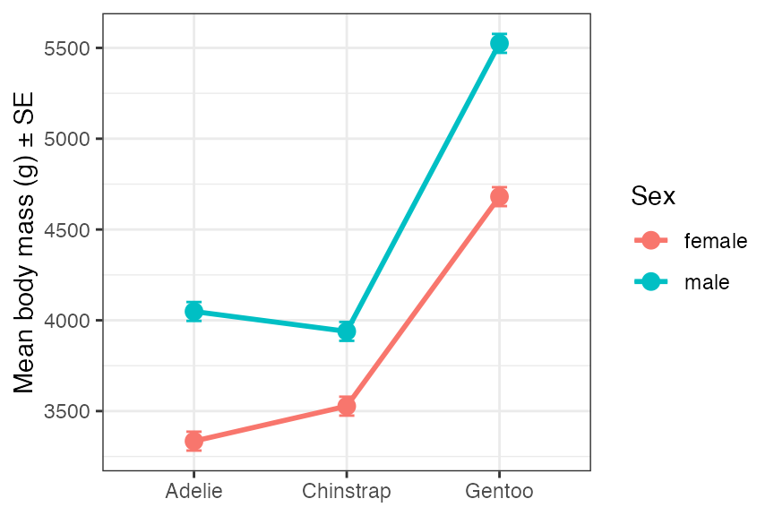

Two-factor ANOVA with an interaction, Type III sums of squares, estimated marginal means, simple effects, and an interaction plot, using the palmerpenguins species-by-sex data from lecture.
Factor A (species): no difference among species means.
Factor B (sex): no difference between sexes.
Interaction A × B: the effect of sex is the same in every species.
Check the interaction first. If it is significant, the main effects are averages over situations that differ, so you should compare one factor within each level of the other (simple effects).
Data: body mass of three penguin species, by sex.
Step 1: Load packages and data
library(tidyverse)library(car) # Anova(), leveneTest()library(emmeans) # marginal means and post-hoc testslibrary(palmerpenguins) # the datap_df <- penguins %>%filter(!is.na(body_mass_g), !is.na(sex), !is.na(species)) %>%select(species, sex, body_mass_g)count(p_df, species, sex)
# A tibble: 6 × 3
species sex n
<fct> <fct> <int>
1 Adelie female 73
2 Adelie male 73
3 Chinstrap female 34
4 Chinstrap male 34
5 Gentoo female 58
6 Gentoo male 61
Step 2: Balance the design
The cells have unequal n. As in lecture, we first sample the same number from every cell so the three types of sums of squares agree. (Step 9 shows what changes when the data are unbalanced.)
Shapiro-Wilk normality test
data: residuals(anova_model)
W = 0.99612, p-value = 0.8886
leveneTest(body_mass_g ~ species * sex, data = balanced_df)
Levene's Test for Homogeneity of Variance (center = median)
Df F value Pr(>F)
group 5 0.7841 0.5622
198
Step 6: The ANOVA table
anova_type3 <-Anova(anova_model, type ="III")anova_type3
Anova Table (Type III tests)
Response: body_mass_g
Sum Sq Df F value Pr(>F)
(Intercept) 3557308900 1 38701.5271 < 2.2e-16 ***
species 87725999 2 477.2049 < 2.2e-16 ***
sex 21988483 1 239.2224 < 2.2e-16 ***
species:sex 1672776 2 9.0994 0.0001657 ***
Residuals 18199467 198
---
Signif. codes: 0 '***' 0.001 '**' 0.01 '*' 0.05 '.' 0.1 ' ' 1
Read it bottom up: the species:sex interaction is significant, so the size of the sex difference depends on species. The main-effect rows are still true, but they are averages.
Step 7: Follow up the interaction
The six cell means, then species compared within each sex (simple effects):
interaction_emm <-emmeans(anova_model, ~ species * sex)interaction_emm
species sex emmean SE df lower.CL upper.CL
Adelie female 3335 52 198 3232 3437
Chinstrap female 3527 52 198 3425 3630
Gentoo female 4681 52 198 4578 4783
Adelie male 4049 52 198 3946 4151
Chinstrap male 3939 52 198 3836 4042
Gentoo male 5525 52 198 5422 5628
Confidence level used: 0.95
# F-test for species within each sexjoint_tests(anova_model, by ="sex")
sex = female:
model term df1 df2 F.ratio p.value
species 2 198 196.089 <0.0001
sex = male:
model term df1 df2 F.ratio p.value
species 2 198 290.216 <0.0001
# Tukey pairwise comparisons of species within each sexpairs(interaction_emm, by ="sex", adjust ="tukey")
sex = female:
contrast estimate SE df t.ratio p.value
Adelie - Chinstrap -193 73.5 198 -2.620 0.0256
Adelie - Gentoo -1346 73.5 198 -18.310 <0.0001
Chinstrap - Gentoo -1154 73.5 198 -15.690 <0.0001
sex = male:
contrast estimate SE df t.ratio p.value
Adelie - Chinstrap 110 73.5 198 1.490 0.2979
Adelie - Gentoo -1476 73.5 198 -20.079 <0.0001
Chinstrap - Gentoo -1586 73.5 198 -21.569 <0.0001
P value adjustment: tukey method for comparing a family of 3 estimates
Compact letter display for all six cells (cells sharing a letter do not differ):
species sex emmean SE df lower.CL upper.CL .group
Adelie female 3335 52 198 3196 3473 a
Chinstrap female 3527 52 198 3389 3665 a
Chinstrap male 3939 52 198 3801 4077 b
Adelie male 4049 52 198 3910 4187 b
Gentoo female 4681 52 198 4543 4819 c
Gentoo male 5525 52 198 5387 5663 d
Confidence level used: 0.95
Conf-level adjustment: sidak method for 6 estimates
P value adjustment: sidak method for 15 tests
significance level used: alpha = 0.05
NOTE: If two or more means share the same grouping symbol,
then we cannot show them to be different.
But we also did not show them to be the same.
Step 8: Interaction plot
Non-parallel lines are what an interaction looks like.
emm_df <-as.data.frame(interaction_emm)emm_df %>%ggplot(aes(species, emmean, color = sex, group = sex)) +geom_point(size =3) +geom_line(linewidth =1) +geom_errorbar(aes(ymin = emmean - SE, ymax = emmean + SE), width =0.1) +labs(x =NULL, y ="Mean body mass (g) ± SE", color ="Sex") +theme_bw()

Step 9: Unbalanced data — why Type III
With unequal cell sizes, Type I (sequential) sums of squares change with the order of the terms; Type II and III do not. Compare on the full, unbalanced data:
unbal_model <-lm(body_mass_g ~ species * sex, data = p_df)anova(unbal_model) # Type I: order matters
Analysis of Variance Table
Response: body_mass_g
Df Sum Sq Mean Sq F value Pr(>F)
species 2 145190219 72595110 758.358 < 2.2e-16 ***
sex 1 37090262 37090262 387.460 < 2.2e-16 ***
species:sex 2 1676557 838278 8.757 0.0001973 ***
Residuals 327 31302628 95727
---
Signif. codes: 0 '***' 0.001 '**' 0.01 '*' 0.05 '.' 0.1 ' ' 1
Anova(unbal_model, type ="III") # Type III: use this with an interaction
Anova Table (Type III tests)
Response: body_mass_g
Sum Sq Df F value Pr(>F)
(Intercept) 5232595969 1 54661.828 < 2.2e-16 ***
species 143001222 2 746.924 < 2.2e-16 ***
sex 29851220 1 311.838 < 2.2e-16 ***
species:sex 1676557 2 8.757 0.0001973 ***
Residuals 31302628 327
---
Signif. codes: 0 '***' 0.001 '**' 0.01 '*' 0.05 '.' 0.1 ' ' 1
# put R's default contrasts back when you are doneoptions(contrasts =c("contr.treatment", "contr.poly"))
Step 10: Write it up
Body mass differed among species (F2,198 = 477.2, p < 0.001) and between sexes (F1,198 = 239.2, p < 0.001), and the sex difference depended on species (species × sex interaction: F2,198 = 9.1, p < 0.001; two-way ANOVA, Type III SS). Males were heavier than females in all three species, with the largest difference in Gentoo penguins.
Report all three F-tests with df and p, then describe the interaction using the cell means and the interaction plot.